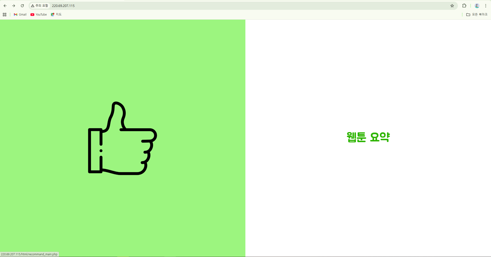
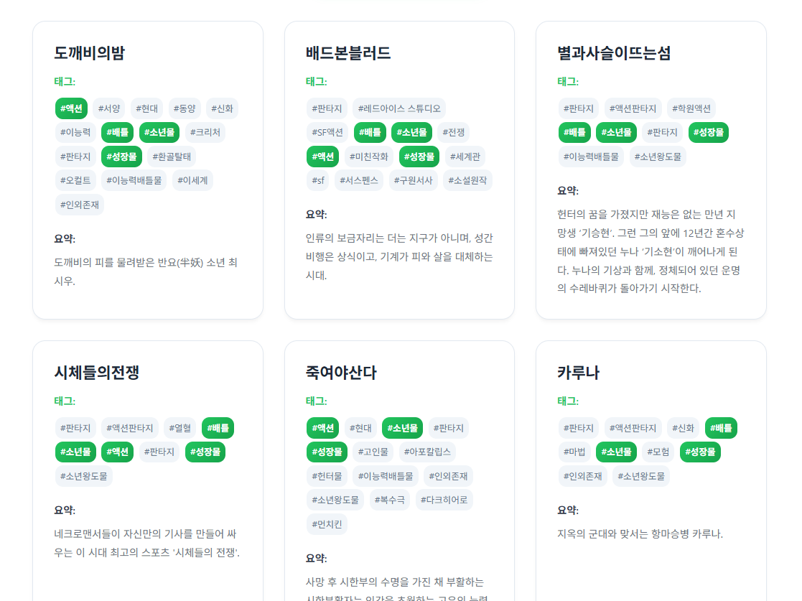
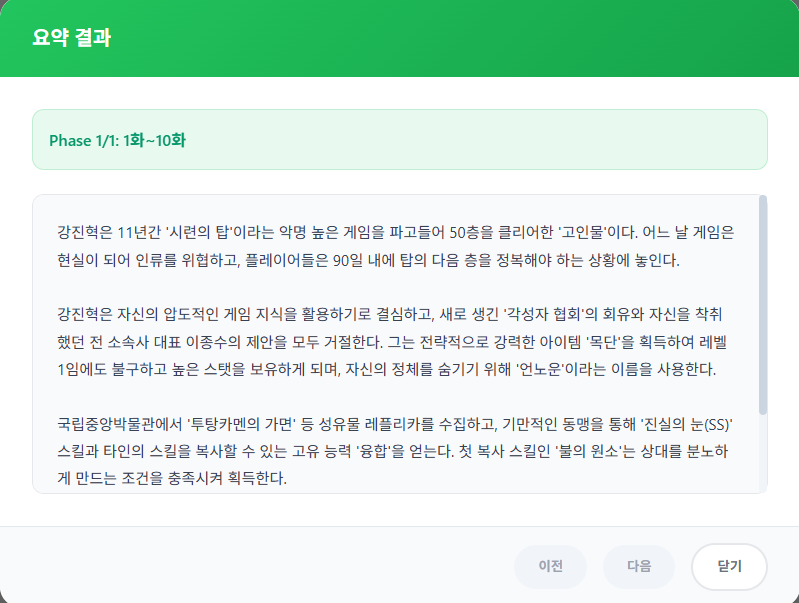

AI 기반 웹툰 추천 및 요약 서비스
사용자의 취향을 분석하고 핵심 스토리를 요약해주는 플랫폼 UI/UX

1. 메인 화면 (추천 서비스)
사용자가 웹툰 추천 서비스로 진입하는 메인 랜딩 페이지입니다. 직관적인 화면 분할을 통해 기능을 선택할 수 있습니다.

2. 메인 화면 (요약 서비스)
웹툰 요약 서비스로 진입하는 페이지입니다. 프로젝트의 포인트 컬러인 그린을 통일감 있게 배치했습니다.

3. AI 프롬프트 기반 태그 추출
사용자가 원하는 스토리 라인을 자연어로 입력하면, AI가 분석하여 연관된 장르 및 특징 태그(#성장물, #액션 등)를 자동 추출합니다.

4. 맞춤형 웹툰 추천 결과
추출된 태그와 일치하는 웹툰들을 카드 형태로 리스트업하여 보여줍니다. 태그 일치율과 간략한 요약을 함께 제공합니다.

5. 회차별 요약 검색 모달
내용이 궁금한 웹툰의 특정 회차(예: 1화 ~ 10화) 범위를 지정하여 요약을 요청할 수 있는 검색 모달입니다.

6. AI 요약 결과 제공
선택한 회차 범위의 방대한 스토리를 AI가 단락별로 깔끔하게 정리하여, 핵심 내용만 빠르게 파악할 수 있도록 텍스트로 제공합니다.